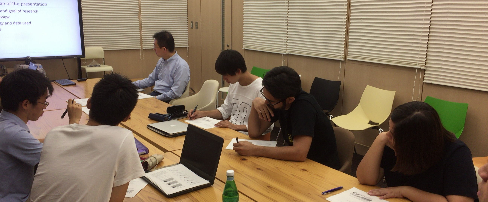

教育（講義等）
加藤浩徳教授の提供している講義や研究室での活動の紹介です．
担当講義の概略
東京大学では，主に工学部社会基盤学科および大学院工学系研究科社会基盤学専攻において講義を担当しています．また，2016年からは，ベトナム・ハノイにある日越大学でも社会基盤工学プログラムにおいて講義を提供しています．東京大学での講義内容は，こちらでご覧になれます．
研究室での教育活動

国際プロジェクト研究室のメンバー全員が参加する研究室ゼミに加えて，私を指導教員とする学生については「チーム」単位での指導も行っています．学生との個別打ち合わせはもちろんのこと，チーム単位での定例ゼミや外部講師を招いた講演会なども行っています．詳しくはこちらをご覧ください．
CV（和文）｜教育（講義等）｜社会的貢献｜最近の研究｜研究内容の紹介｜その他